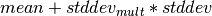

The Statistical Outlier filter passes data through the Point Cloud Library (PCL) StatisticalOutlierRemoval algorithm.
StatisticalOutlierRemoval uses point neighborhood statistics to filter outlier data. The algorithm iterates through the entire input twice. During the first iteration it will compute the average distance that each point has to its nearest k neighbors. The value of k can be set using mean_k. Next, the mean and standard deviation of all these distances are computed in order to determine a distance threshold. The distance threshold will be equal to: . The multiplier for the standard deviation can be set using multiplier. During the next iteration the points will be classified as inlier or outlier if their average neighbor distance is below or above this threshold respectively.

Before outlier removal, noise points can be found both above and below the scene.

After outlier removal, the noise points are removed.
See [Rusu2008] for more information.
| [Rusu2008] | Rusu, Radu Bogdan, et al. “Towards 3D point cloud based object maps for household environments.” Robotics and Autonomous Systems 56.11 (2008): 927-941. |